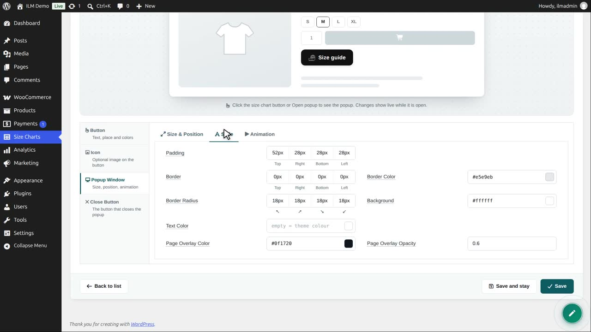
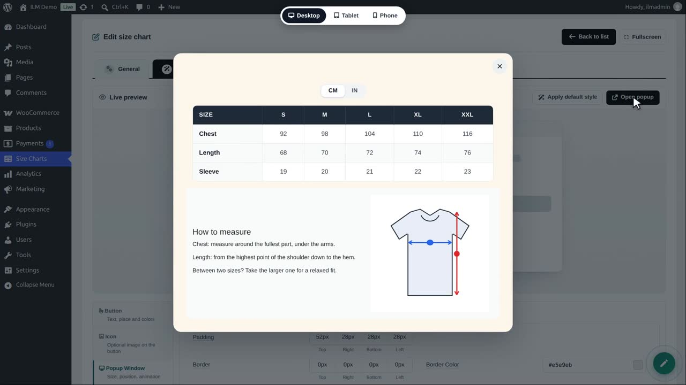
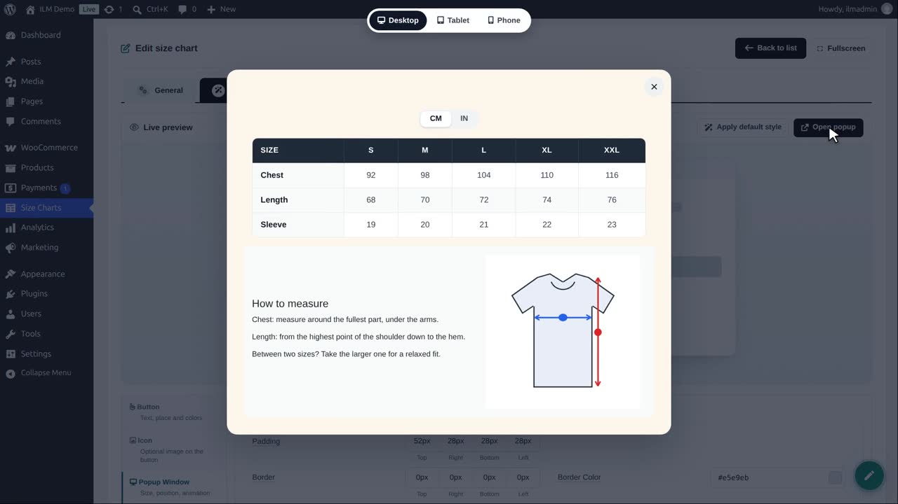
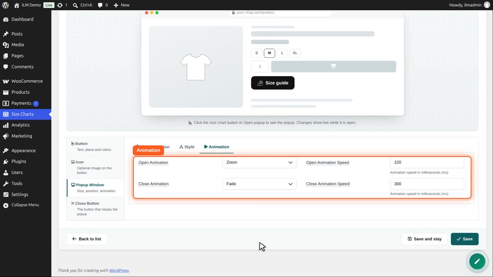
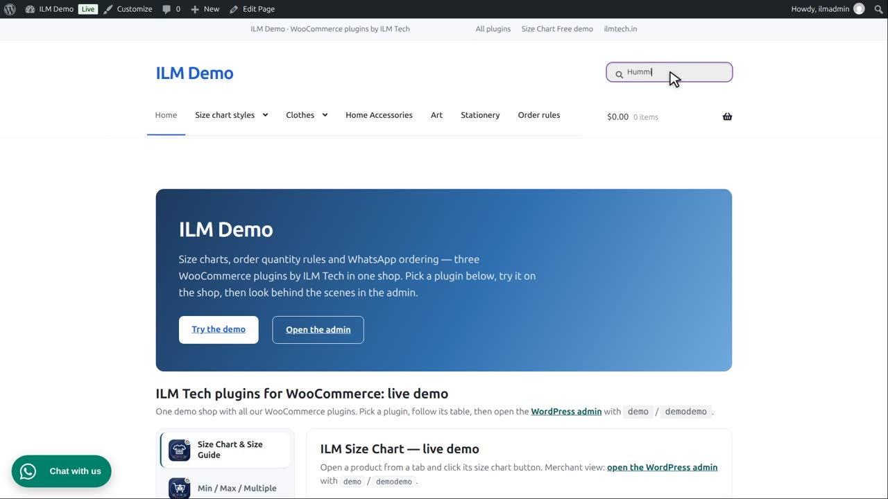
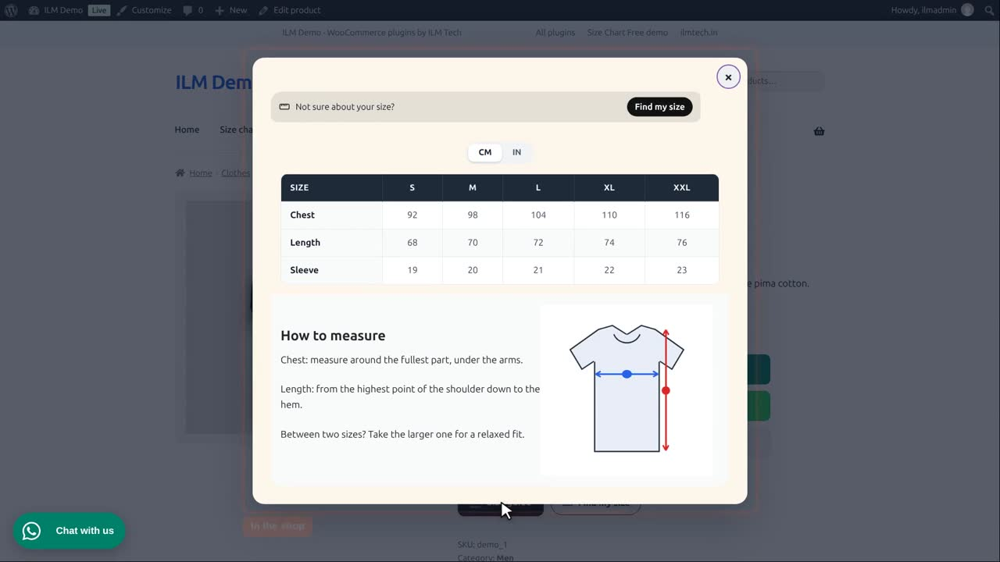
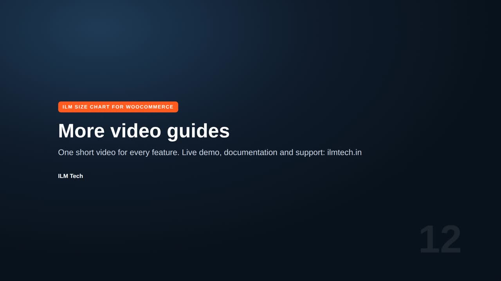

Edit the chart, open Popup Button, Popup Window, then Style.

We give the window a warm background and rounded corners of 18 pixels, and open the preview. Padding and border are here too.

Page overlay colour and opacity dim the page behind the window: dark blue, at 70 percent.

In Animation, choose how the window opens: fade, slide, zoom or bounce, and its speed in milliseconds. The close animation is set the same way. We choose Zoom.

Open popup plays the animation in the preview.

Save, and the shop opens the chart the same way.

The text colour field sets the colour of all text in the window.
